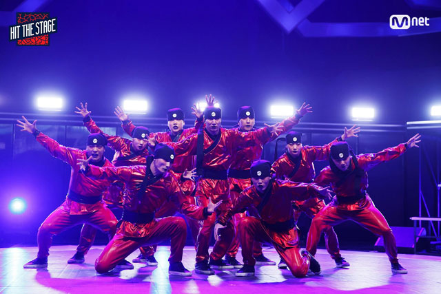

힙합을 기본으로 하는 국내 정상급 어반 댄스팀.
팀명의 뜻은 Jerk가 '갑자기 홱 움직이는'과 '얼간이' 등 두 가지 의미를 지니고 있는 만큼, '단지 갑자기 홱 움직이고 있는 얼간이들' 정도로 볼 수 있다.
리더인 Young J가 단짝 친구인 J Ho와 함께 만든 팀으로 현재는 에스원, M. Joon, 이정 등 12명으로 구성되어 있다.
기본적으로 힙합에 뿌리를 두고 있기는 하지만 팝핀, 크럼핑, 락킹, 비보잉, 한국 무용에 이르기까지 장르에 구애 받지 않는 퍼포먼스를 보여준다.
멤버 중 싱어송라이터이기도 한 M. Joon이 팀내의 음악을 담당하고 있는 듯 하고, 현재 스텝업 6 오디션에도 참가 중이다.
